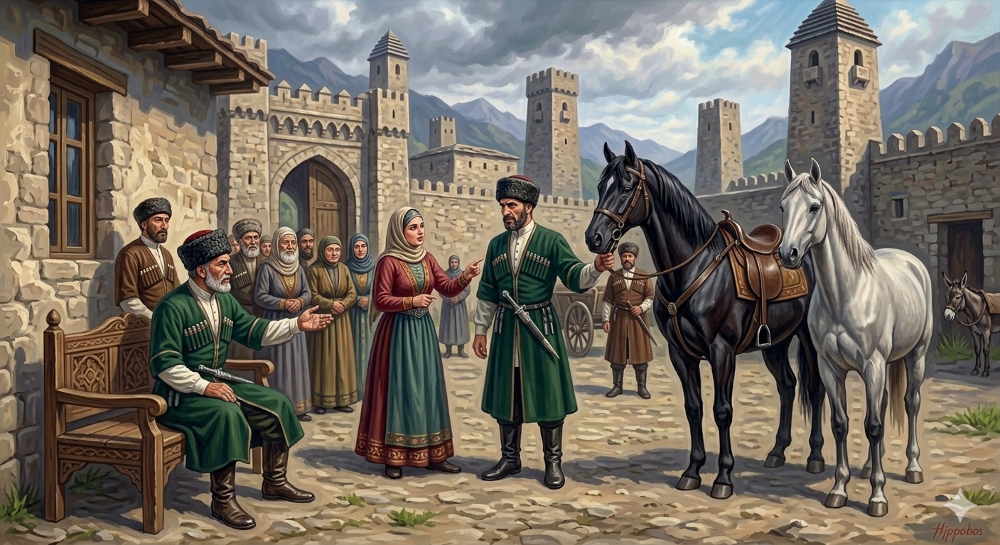

И.А. Дахкильгов. Хьехаме дувцарш - поучительные рассказы-притчи.
И.А. Дахкильгов. Хьехаме дувцарш - поучительные рассказы-притчи. Из ингушского фольклора.

Сесаго аьннар ца деш вола къонах
Цхьан аьлано кхайкхадаь хиннад, йоах: - Сесаго аьннар ца деш, цунга ла ца догӀаш, шийна бакъахьа хетар мара деш воаца саг сона тӀавола. Сай ремийцара дикагӀа бола ди лургба аз цунна. СовгӀат дагадоаллаш хьатӀаихача дукхача къонахех тӀеххьара цаӀ гучуваьккхав, цхьаккха тайпара сесаго аьннар деш воаца къонах. Ремана тӀа а вига, аьлано аьннад цунга, хьайна безаш бола ди харжа. Реман юкъера цхьан дина бӀарг тӀаэттаб къонахчун: - Из дӀа-ра Ӏаьржа ди хорж аз, - аьннад цо. - Цулла дуккха толашагӀа ба хьона хьало-о бажаш бола сира ди, - аьннад цунна лалла латташ хиннача сесага. - Ӏаьржабар безац сона, хьало-ора сира ди хорж аз, - аьннад къонахчо аьланга. ТӀаккха аьлано а аьннад: - Дош дехар хьа. Ер ди хьона а ца луш, хьа сесага лу аз.
РУССКИЙ
Мужчина, который не слушается жены
Некий князь объявил: "Пусть явится ко мне тот, кто не слушается советов своей жены и делает только то, что сам считает нужным. Такому мужчине я на выбор дам любого коня из своего табуна". Многие пытались получить такой ценный подарок. Но из них только один на поверку оказался тем, кто совершенно не прислушивается к советам своей жены. Князь подвел этого победителя к табуну и предложил выбрать в подарок любого коня. Из большого табуна мужчине понравился один конь, и он сказал: - Я выбираю во-он того вороного коня. - Намного лучше него во-он пасущийся серый конь, - произнесла стоявшая рядом жена. - Нет, не хочу вороного, хочу во-он того, серого, - сказал мужчина. Тогда князь молвил: - Ты не тот, за кого себя выдаешь. Я дарю этого коня, но не тебе, а твоей жене.
ENGLISH
A man who does not listen to his wife
A certain prince declared, "Let him come before me who does not heed his wife's advice, but does only what he himself deems fit. To such a man, I shall grant the choice of any horse from my herd." Many tried to obtain this valuable gift. But only one of them turned out to be someone who paid absolutely no heed to his wife's advice. The prince led this man to the herd and offered him his choice of horse. From the large herd, the man chose one horse and said, 'I choose that black horse over there.' "That grey horse over there is much better," said his wife, standing nearby. "No, I don't want the black one; I want that grey one over there," said the man. Then the prince said, 'You are not who you claim to be. I am giving this horse as a gift, but not to you, but to your wife."
НОХЧИЙН
Зудчо аьлларг ца деш волу къонах
Цхьана эло кхайкхина хилла, бох: - Зудчо аьлларг ца деш, цуьнга ла ца дугӀуш, шена бакъхьа хетарг бен деш воца стаг суна тӀевола. Сай реманера диках бола дин лур бу ас цунна. СовгӀат дага доллуш схьатӀеихначу дукха къонахех тӀаьххьара цхьаъ гучуваьккхина, цхьа а тайпанна зудчо аьлларг деш воца къонах. Ремина тӀе а вигна, эло аьлла цуьнга, хьайна безаш бола дин харжа. Ремин йукъера цхьана динна бӀаьрг тӀехӀоьттина къонахчун: - Иза дӀора Ӏаьржа дин хоржу ас, - аьлла цо. - Цул дуккха тоьлуш бу хьуна хьуьлло-о бежаш бола сира дин, - аьлла цунна улле лаьтташ хиллачу зудчо. - Ӏаьржа берг безац суна, хьуьлла дора сира дин хоржу ас, - аьлла къонахчо эле. ТӀаккха эло а аьлла: - Дош дуьйхира хьан. ХӀара дин хьуна а ца луш, хьан зудчун ло ас.
ПОГОВОРКИ
ГӀовтал лелаечунга со йодац, чокхе дувхачо со йигац. За юношу в бешмете я не хочу выйти замуж, а юноша в черкеске меня не берет. I won't marry a lad in a beshmet, but the lad in a cherkeska won't take me. ГӀовтал лелочуьнга со ца йоьда, чоа дуьйхинчо со ца йуьгу.Дешан да хиллал хьай ди деце, дош ма ле. Не давай слова, если не можешь сдержать его. Don't give your word unless you can keep it. Дешан да хиллал хьай де дацахь, дош ма ло.Дош дала сих ма ле, сихле из кхоачашде. Не спеши давать слово, спеши его сдержать. Don't be hasty to give your word, but be quick to keep it. Дош дала сих ма ло, сихло иза кхочушдан.Къонахчун дош болатах даь да. Слово настоящего мужчины из стали выковано. A true man's word is forged of steel. Къонахчун дош болатах дина ду.Мотт кхоабаш йола саг мара дукхагӀа еза. Муж любит жену молчаливую. A husband loves a wife who knows how to keep silent. Мотт кхобуш йолу зуда майрана дукхах йеза.Сесага тӀехьаваьнна къонах йоӀала хет. Муж, потакающий во всем жене, кажется женоподобным. A husband who indulges his wife's every wish seems womanish. Зудчунна тӀаьхьаваьлла къонах йоӀал хета.Хьаьстача, Ӏатто а шура дуккхагӀа лу. Даже корова, если ее приласкать, больше молока дает. Even a cow, if petted, gives more milk. Хьаьстича, аьтто а шура дукхах ло.ЦӀагӀара че фусам-наьна я, арахье фусам-даьга я. Все, что в доме – заботы хозяйки, вне дома – хозяина. What is inside the house is the mistress's concern; what is outside is the master's. ЦӀера чоь хӀусам-ненан йу, арахье хӀусам-ден йу.ЦӀенах кхеташ воаца фусам-даи, цӀагӀара ара ца воала фусам-даи шаккхе а сесага гоама ва. Что по селу без дела болтающийся муж, что муж, сиднем дома сидящий, - оба жене ненавистны. A husband who idles around the village and one who never leaves the house at all are both equally hateful to his wife. ЦӀенах кхеташ воцу хӀусам-дай, цӀера ара ца волу хӀусам-дай – ший а зудчунна гома ву.Шера цкъа мукъа сесаго аьнначунга а ладийгӀача мегаргда. Можно хотя бы и раз в году послушаться совета жены. It is fine to heed a wife's advice, at least once a year. Шарахь цкъа мукъане зудчо аьллачуьнга а ладоьгӀча мегар ду.Ӏатто цӀог ца хьовзадича, сиргӀа тӀехьаяьннаяц. Если корова не завиляет хвостом, бугай не пойдет за нею. If the cow does not swish her tail, the bull will not follow her. Аьтто цӀог ца хьовзадича, старгӀа тӀаьхьайаьлла йац.